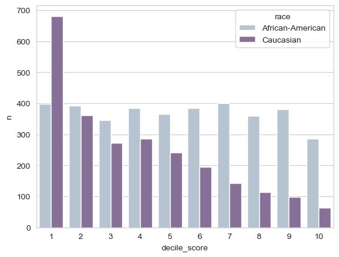

Today we are going to study an extremely famous investigation into algorithmic decision-making in the sphere of criminal justice by @angwin2022machine, originally written for ProPublica in 2016. This investigation significantly accelerated the pace of research into bias and fairness in machine learning, due in combination to its simple message and publicly-available data.
It’s helpful to look at a sample form used for feature collection in the COMPAS risk assessment.
You may have already read about the COMPAS algorithm in the original article at ProPublica. Our goal today is to reproduce some of the main findings of this article and set the stage for a more systematic treatment of bias and fairness in machine learning.
Let’s first obtain the data. I’ve hosted a copy on the course website, so we can download it using a URL.
This data set was obtained by @angwin2022machine through a public records request. The data comprises two years worth of COMPAS scoring in Broward County, Florida.
import pandas as pdimport seaborn as snsimport numpy as npsns.set_style("whitegrid")np.set_printoptions(precision =3)pd.set_option('display.precision', 3)url ="https://raw.githubusercontent.com/PhilChodrow/ml-notes/main/data/compas/compas.csv"compas = pd.read_csv(url)
Intel MKL WARNING: Support of Intel(R) Streaming SIMD Extensions 4.2 (Intel(R) SSE4.2) enabled only processors has been deprecated. Intel oneAPI Math Kernel Library 2025.0 will require Intel(R) Advanced Vector Extensions (Intel(R) AVX) instructions.
Intel MKL WARNING: Support of Intel(R) Streaming SIMD Extensions 4.2 (Intel(R) SSE4.2) enabled only processors has been deprecated. Intel oneAPI Math Kernel Library 2025.0 will require Intel(R) Advanced Vector Extensions (Intel(R) AVX) instructions.
For today we are only going to consider a subset of columns.
compas#v_decile_score predicts if the person will be arrested again. The higher, the more likely.#two_year_recid is if the last two years they committed another offense
id
name
first
last
compas_screening_date
sex
dob
age
age_cat
race
...
v_decile_score
v_score_text
v_screening_date
in_custody
out_custody
priors_count.1
start
end
event
two_year_recid
0
1
miguel hernandez
miguel
hernandez
2013-08-14
Male
1947-04-18
69
Greater than 45
Other
...
1
Low
2013-08-14
2014-07-07
2014-07-14
0
0
327
0
0
1
3
kevon dixon
kevon
dixon
2013-01-27
Male
1982-01-22
34
25 - 45
African-American
...
1
Low
2013-01-27
2013-01-26
2013-02-05
0
9
159
1
1
2
4
ed philo
ed
philo
2013-04-14
Male
1991-05-14
24
Less than 25
African-American
...
3
Low
2013-04-14
2013-06-16
2013-06-16
4
0
63
0
1
3
5
marcu brown
marcu
brown
2013-01-13
Male
1993-01-21
23
Less than 25
African-American
...
6
Medium
2013-01-13
NaN
NaN
1
0
1174
0
0
4
6
bouthy pierrelouis
bouthy
pierrelouis
2013-03-26
Male
1973-01-22
43
25 - 45
Other
...
1
Low
2013-03-26
NaN
NaN
2
0
1102
0
0
...
...
...
...
...
...
...
...
...
...
...
...
...
...
...
...
...
...
...
...
...
...
7209
10996
steven butler
steven
butler
2013-11-23
Male
1992-07-17
23
Less than 25
African-American
...
5
Medium
2013-11-23
2013-11-22
2013-11-24
0
1
860
0
0
7210
10997
malcolm simmons
malcolm
simmons
2014-02-01
Male
1993-03-25
23
Less than 25
African-American
...
5
Medium
2014-02-01
2014-01-31
2014-02-02
0
1
790
0
0
7211
10999
winston gregory
winston
gregory
2014-01-14
Male
1958-10-01
57
Greater than 45
Other
...
1
Low
2014-01-14
2014-01-13
2014-01-14
0
0
808
0
0
7212
11000
farrah jean
farrah
jean
2014-03-09
Female
1982-11-17
33
25 - 45
African-American
...
2
Low
2014-03-09
2014-03-08
2014-03-09
3
0
754
0
0
7213
11001
florencia sanmartin
florencia
sanmartin
2014-06-30
Female
1992-12-18
23
Less than 25
Hispanic
...
4
Low
2014-06-30
2015-03-15
2015-03-15
2
0
258
0
1
7214 rows × 53 columns
We are also only going to consider white (Caucasian) and Black (African-American) defendants:
The decile score is the algorithm’s prediction. Higher decile scores indicate that, according to the COMPAS model, the defendant has higher likelihood to be charged with a crime within the next two years. In the framework we’ve developed in this class, you can think of the decile score as being produced by computing a score like \(s_i = \langle \mathbf{w}, \mathbf{x}_i \rangle\) for each defendant \(i\), and then dividing these into the lowest 10% (decile score 1), the next 10% (decile score 2), the next 10% (decile score 3) and so on.
The easiest way to see how this looks is with a bar chart, which we can make efficiently using the seaborn (sns) package.
counts = compas.groupby(["race", "decile_score"]).size().reset_index(name ="n")p = sns.barplot(data = counts, x ="decile_score", y ="n", hue ="race", palette ="BuPu", saturation =0.5)

You may notice that the number of white defendants who receive a given decile score tends to decrease as the score increases, whereas the number of Black defendants remains relatively constant.
Let’s also take a look at the recidivism rate in the data:
compas["two_year_recid"].mean()
0.4661788617886179
So, in these data, approximately 47% of all defendants went on to be charged of another crime within the next two years. This is sometimes called the prevalence of the outcome. Although this is not a “good” outcome, it is labeled 1 in the target data and so we refer to this as the “positive” outcome. Prevalence without further specification usually refers to prevalence of the positive outcome.
The base rate of prediction accuracy in this problem is 53%: if we always guessed that the defendant was not arrested within two years, we would be right 53% of the time.
We can also compute the prevalence broken down by race of the defendant:
When interpreting these different prevalences, it is important to remember that
Race is itself a socially-constructed system of human categorization invented by humans with political and economic motives to describe other humans as property [@bonilla-silvaRacismRacistsColorblind2018].
The relation between arrest and actual criminal offense can display racial bias, with effects varying by geography [@fogliatoValidityArrestProxy2021].
Decisions about which behaviors are criminal are contingent political decisions which have, historically, fallen hardest on Black Americans [@yusefCriminalizingRaceRacializing2017].
The prevalences between the two groups are substantially different. This difference will have major consequences later on for the possibility of different kinds of fairness in classifiers.
We’re going to treat the COMPAS algorithm as a binary classifier, but you might notice a problem: the algorithm’s prediction is the decile_score column, which is not actually a 0-1 label. Following the analysis of @angwin2022machine, we are going to construct a new binary column in which we say that a defendant is predicted_high_risk if their decile_score is larger than 4.
compas["predicted_high_risk"] = compas["decile_score"] >4# if greater than four, you are a high risk
Now that we’ve done that, we can ask: how likely are Black and white defendants to receive positive predictions in this data?
Black defendants are substantially more likely to receive a positive prediction than white defendants, and the disparity is larger than the observed prevalence of the positive outcome.
Fairness (Part 1)
Is this fair? What is your gut telling you? Yes, no, possibly? What information would you need in order to make a judgment? What is the principle on which your judgment rests?
The ProPublica Findings
Let’s now ask a few questions about the the predictive accuracy of this algorithm. First, how accurate it is it overall?
The overall accuracies for Black and white defendants are comparable, and both are somewhat higher than the base rate of 53%.
What about the error rates? Here is a simple calculation which computes the false positive rate (FPR) in the first row and the true positive rate (TPR) on the bottom row:
compas.groupby(["two_year_recid"])["predicted_high_risk"].mean()#checking false postive rate on top row (assessed at being at a high risk of committing another crime)#true positive rate on bottom row
The false positive rate for Black defendants is much higher than the false positive rate for white defendants. This was the main finding of @angwin2022machine. The FPR of 44% for Black defendants means that, out of every 100 Black defendants who in fact will not commit another crime, the algorithm nevertheless predicts that 44 of them will. In contrast, the FPR of 23% for white defendants indicates that only 23 out of 100 non-recidivating white defendants would be predicted to recidivate.
There are a few ways in which we can think of this result as reflecting bias:
The algorithm has learned an implicit pattern wherein Black defendants are intrinsically more “criminal” than white defendants, even among people who factually never committed another crime. This is a bias in the patterns that the algorithm has learned in order to formulate its predictions. This is related to the idea of representational bias, in which algorithms learn and reproduce toxic stereotypes about certain groups of people.
Regardless of how the algorithm forms its predictions, the impact of the algorithm being used in the penal system is that more Black defendants will be classified as high-risk, resulting in more denials of parole, bail, early release, or other forms of freedom from the penal system. So, the algorithm has disparate impact on people. This is sometimes called allocative or distributional bias: bias in how resources or opportunities (in this case, freedom) are allocated or distributed between groups.
Sometimes predictive equality is also defined to require that the false negative rates (FNRs) be equal across the two groups as well.
We can think about the argument of @angwin2022machine as a two-step argument:
The COMPAS algorithm has disparate error rates by race.
Therefore, the COMPAS algorithm is unjustly biased with respect to race.
This argument implicitly equates equality of error rates with lack of bias.
Fairness (Part 2)
Suppose that we developed an alternative algorithm in which the false positive rates were equal, but there were still more positive predictions for Black defendants overall. Would that be enough to ensure fairness?
Suppose that we developed an alternative prediction algorithm in which the rate of positive prediction was the same across racial groups, but the false positive rates were different. Would that be to ensure fairness?
The Rebuttal
@angwin2022machine kicked off a vigorous discussion about what it means for an algorithm to fair and how to measure deviations from bias. In particular, Northpointe, the company that developed COMPAS, issued a report @flores2016false in which they argued that their algorithm was fair. Their argument is based on an idea of fairness which is sometimes called sufficiency@corbett-daviesAlgorithmicDecisionMaking2017.
Here’s the intuition expressed by sufficiency. Imagine that you and your friend both received an A- in Data Structures. Suppose, however, that the instructor says different things to each of you:
To you, the instructor says: “You did fine in this class, but I don’t think that you are prepared to take Computer Architecture. I gave you a higher grade than I would normally because you wear cool hats in class.”
To your friend, the instructor says: “*You did fine in this class and I think you are prepared to take Computer Architecture. Some students got a bump in their grade because they are cool-hat-wearers, but you didn’t get that benefit.”
Feels unfair, right? The instructor is saying that:
What a grade means for you in terms of your future success depends on your identity group.
Note
Suppose that you heard this, but instead of cool hats it was because you are a member of an identity group that “needs some help” in order to achieve equitable representation in the CS major. How would you feel? Would that feel fair to you?
We’ll formally define sufficiency in a future lecture. For now, let’s use an informal definition:
Sufficiency means that a positive prediction means the same thing for future outcomes for each racial group.
To operationalize this idea, we are looking for the rate of re-arrest to be the same between (a) Black defendants who received a positive prediction and (b) white defendants who received a positive prediction.
Let’s check this:
The rates of rearrest are relatively similar between groups when controlling for the predictions they collectively received. Formal statistical hypothesis tests are typically used to determine whether this difference is sufficiently “real” to warrant correction. In most of the published literature, scholars have considered that the two rates are sufficiently close that we should instead simply say that COMPAS appears to be relatively close to satisfying sufficiency.
Indeed, in a rejoinder article published by affiliates of the company Northpointe which produced COMPAS, the fact that COMPAS satisfies sufficiency is one of the primary arguments [@flores2016false].
Recap
In these notes, we replicated the data analysis of @angwin2022machine, finding that the COMPAS algorithm has disparate error rates between Black and white defendants. We introduced the idea that fairness actually has several different facets in our moral intuitions, and found that the COMPAS algorithm satisfies one of them (sufficiency: equal scores mean the same thing regardless of your group membership) but not the others (equal prediction rates and equal error rates).
Some Questions Moving Forward
Can we have it all? Could we modify the COMPAS algorithm in such a way that it satisfies all the ideas of fairness that we discussed above? Could we then call it “fair” or “unbiased?”
Are there other ways to define fairness? Which ones are most compelling to us? Does the right idea of fairness depend on the context in which we apply it?
How did this happen? The COMPAS algorithm was never trained on race data about the defendant. How did it happen that this algorithm nevertheless made recommendations at different rates across groups?
Is automated decision-making legitimate in this setting? Can it be legitimate (just, fair) to use an automated decision-system for making recommendations about parole and sentencing decisions at all? What safeguards and forms of recourse are necessary for the legitimate use of automated decision-making in criminal justice?
What are the systemic impacts? Disparate sentencing decisions can have downstream impacts on communities and institutions. How could application of the COMPAS algorithm exacerbate systemic inequalities?